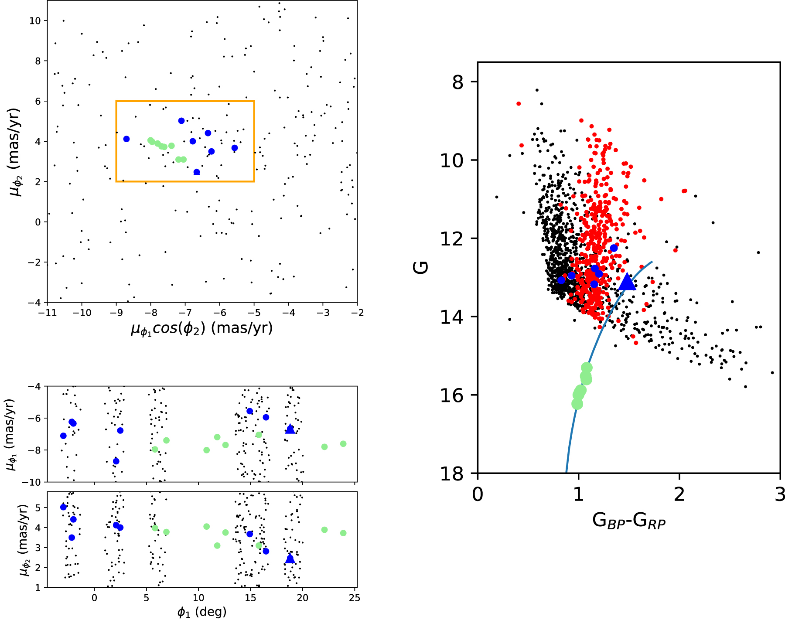

Brown Dwarf Atmospheres with Starry
Currently I am working under Dr. Johanna Vos on mapping brown dwarf surfaces using Starry. The Starry package (Luger et al. 2019) is a set of tools that can map stars and exoplanets based on time series data. Recently, Tan et al. (2021) used three-dimensional atmospheric models to simulate the atmospheres of exoplanets and brown dwarfs. These models produce the most detailed surface maps to date, and produce light curve variability similar to what has been observed in brown dwarfs. With this simulated dataset, we are testing mapping techniques for potential future exoplanet research.

Chemodynamically Characterizing the Jhelum Stellar Stream with APOGEE-2
Stellar streams are the remnants of the Milky Way’s formation, and can provide us with insight into the Milky Way’s formation history. Recent photometric surveys, such as the Dark Energy Survey (DES) and Gaia DR2, have discovered many more new stellar streams. These stellar streams are leftovers from either a globular cluster or a dwarf satellite. In this paper, we present the chemical and dynamic profiles of potential members of the Jhelum star stream.